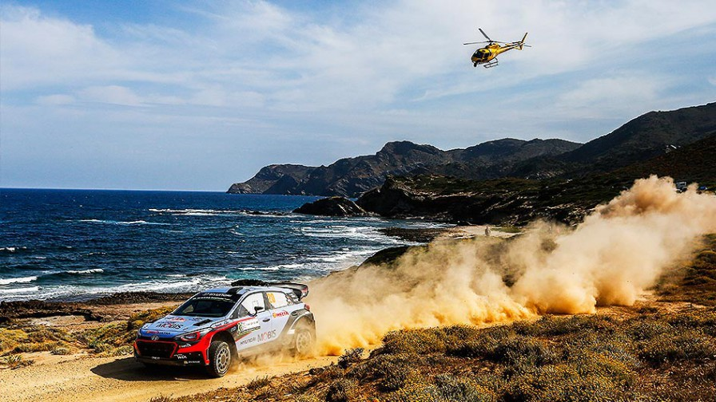

Un rally o rallye es una competición automovilística que se disputa en carreteras abiertas al tráfico pero que se cierran especialmente para su celebración. A la parte cerrada al tránsito rodado se le denomina tramo, que es el lugar donde cada participante compite y que debe completar en el menor tiempo posible. El ganador es aquel que, con la suma de los tiempos de todos los tramos, haya empleado menos para completar la carrera.
Este deporte es una disciplina automovilística con una reglamentación propia y tiene cuatro grandes diferencias respecto a las carreras en circuitos. En primer lugar, se disputan en vías públicas convenientemente cerradas al tránsito rodado; en segundo lugar, el tipo de vehículos utilizados deben ser aptos para circular por carreteras públicas por lo que deben estar matriculados y dotados de los mismos elementos obligatorios que el resto de coches como los faros, la rueda de repuesto o los intermitentes. La tercera peculiaridad es que a diferencia de los circuitos, los equipos que compiten en rally están dotados de dos personas: un piloto y un copiloto, cada uno con una función distinta. La cuarta y última característica es que mientras en circuitos, todos los participantes toman la salida a la vez, en rally lo hacen de uno a uno con un tiempo de un minuto entre ellos por lo que cada piloto compite en solitario y rara vez se topa con un contrincante durante la carrera, salvo que este se haya accidentado o se haya parado por una avería.